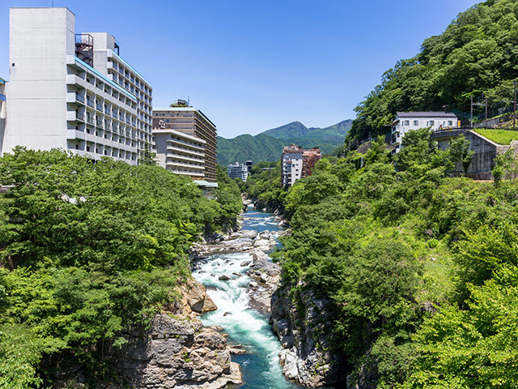
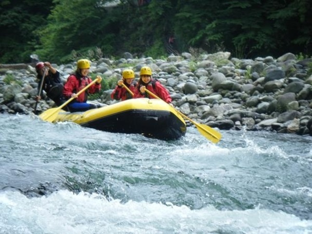
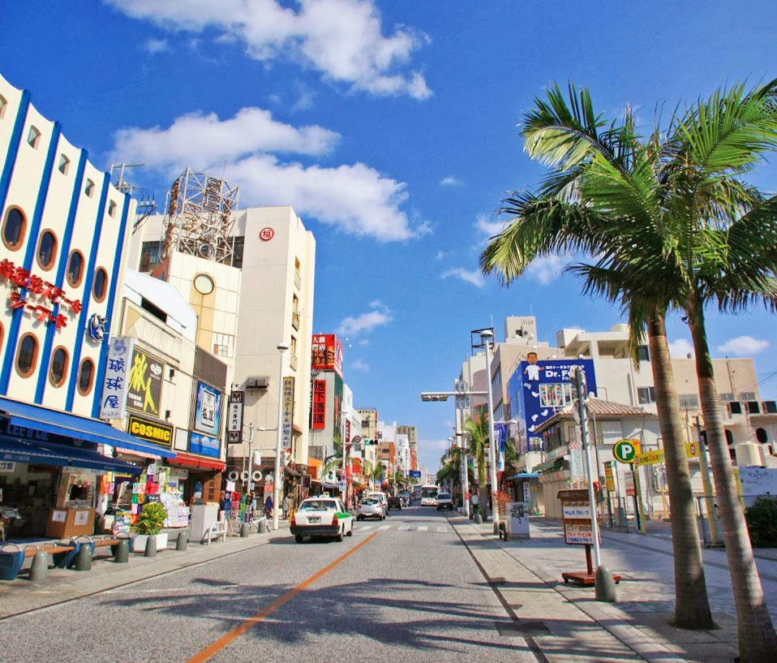
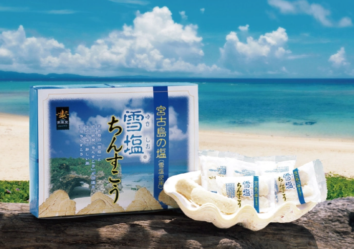

個人的夏に行くべき観光地ランキング
第３位：鬼怒川温泉（栃木県）
第3位は鬼怒川温泉です。鬼怒川は、利根川の支流のなかで一番水質がよく、美しいエメラルドグリーン色の川を眺めながら湧き出る温泉につかれば、極楽としか言いようがないくらい幸せな気分になれます。夏は鬼怒川でラフティングを楽しんでも涼しくなれます。ぜひ行ってみてはいかがでしょうか？
 ↑谷間を流れる鬼怒川
第2位：那覇（沖縄県）
第2位は沖縄県です。県庁所在地である那覇市には沖縄髄一の繫華街である国際通りがあり、お土産店やレストラン、雑貨店が立ち並び、歩いているだけでも楽しい通りです。WW2の沖縄戦後にいち早く復興した「奇跡の1マイル(1.6km)」とよばれ、沖縄を代表する観光地ですです。おすすめのお土産は"ちんすこう"です。甘じょっぱい味がくせになります！
 ↑賑わう国際通り
第1位:熱海（静岡県）
第１位は熱海です。熱海サンビーチを初めとした海水浴場が一番の魅力で、夜にはビーチがライトアップされ、幻想的な雰囲気にビーチが包まれます。夏には暗い相模湾の空を花火が彩ります。熱海は海岸から少し離れると山が連なっているため、花火の音が反響し、スタジアムのようになり、迫力ある花火が楽しめます。